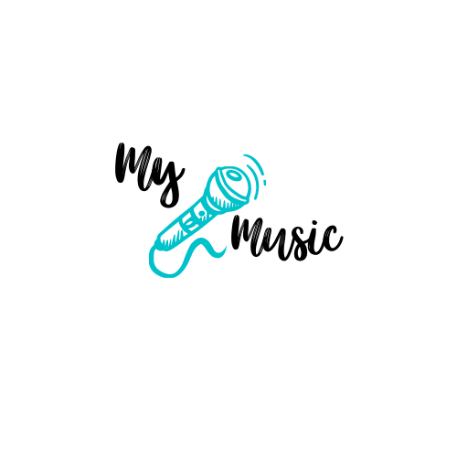

<nav class="navbar navbar-expand-lg navbar-light p-2 text-white bg-opacity-60" style="background: linear-gradient(70deg, rgb(3, 131, 173), white)">
    <a class="navbar-brand" [routerLink]="['']"> </a>
    <button class="navbar-toggler" type="button" data-toggle="collapse" data-target="#navbarSupportedContent" aria-controls="navbarSupportedContent" aria-expanded="false" aria-label="Toggle navigation">
    <span class="navbar-toggler-icon"> </span>
  </button>

    <div class="navbar-collapse collapse" id="navbarSupportedContent">
        <ul class="nav navbar-nav">
            <li class="nav-item">
                
            </li>
            <li class="nav-item my-auto">
                <a class="btn btn-sm btn-outline-warning mx-2" (click)="newSong()">Nueva Canción</a
        >
      </li>
    </ul>
  </div>
</nav>